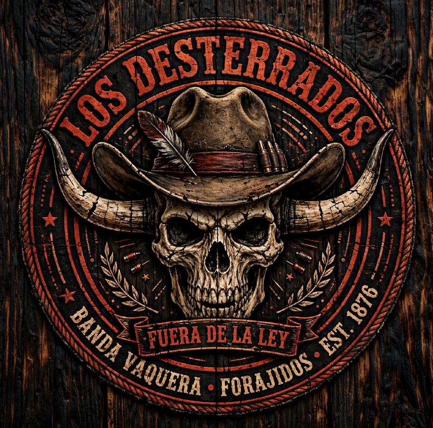

📷LOS DESTERRADOS
"Ni bandera ni amo — La ley de la frontera se respeta o se paga con sangre"
 📷
📷
Consulta a Sadie antes de apretar el gatillo
"En la frontera un tiro en falso te cuesta la horca o un ban del sheriff administrativo. Pulsa un tema rápido o hazme tu pregunta antes de iniciar el asalto."
Búsqueda instantánea en reglamentos: General V3, Forajidos V3, Empresas V3, Médicos y Milicia.
⚠️ Ley de Oro en Tiroteos & Fairplay
- 🚫 Prohibido usar tecla Q para cubrirse o disparar escondido/asomando.
- 🚫 Prohibido usar vendas o tónicos en mitad de un PVP abierto.
- ✔️ 1 Escopeta y 1 Rifle máximo por bando en cualquier enfrentamiento.
- ⏳ 30 min antes y después de reinicios (07:00 y 19:00) prohibido robar.
- ⚠️ Emboscadas: Obligatorio dar 2 tiros al aire para dar FairPlay al Sheriff.
"Dime qué golpe tienes planeado o qué duda te carcome, forajido. Las leyes de Westlands no perdonan despistes y no quiero tener que ir a buscarte al cementerio de Blackwater."
Obligatorio antes de iniciar el ilícito. Detalla ruta, ropa y caballos.
Obligatorio desde Boticaria en adelante para pedir autorización.
Obligatorio usar menú ALT. Máx 50% de armas/items. Dinero todo.